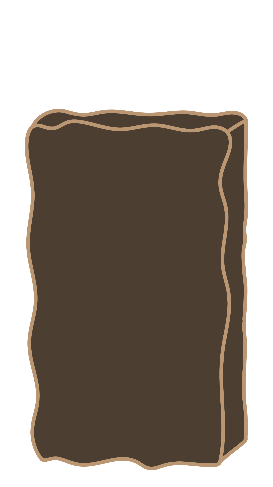
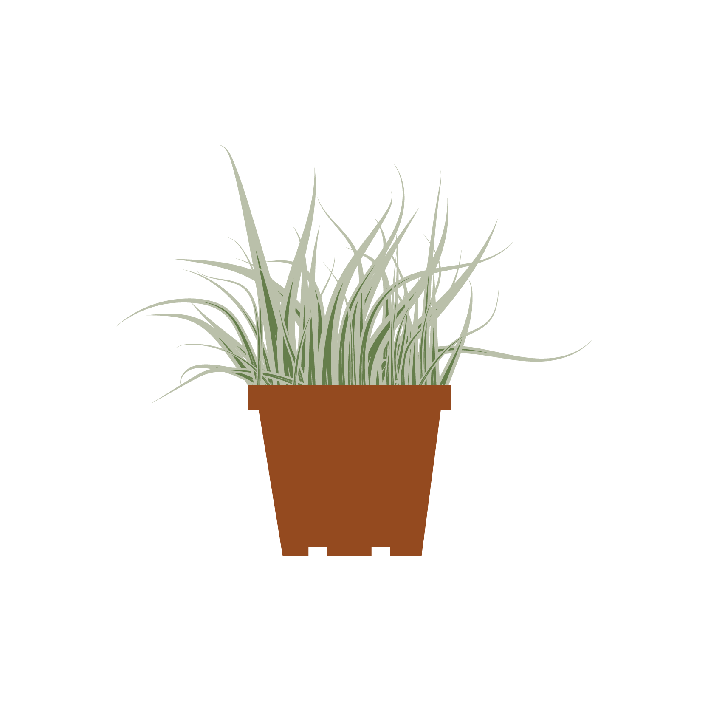

Tip één
Mini moestuin
In veel supermarkten verkopen ze mini-plantjes waarbij je je eigen kruiden kunt (zien) groeien. Dit is een mooi alternatief voor geen tuin hebben. Leer bijvoorbeeld ook hoe je eetbare bloemen zou kunnen kweken in de zomer. Die staan prachtig in een salade.